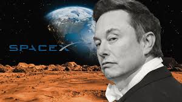
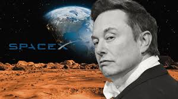
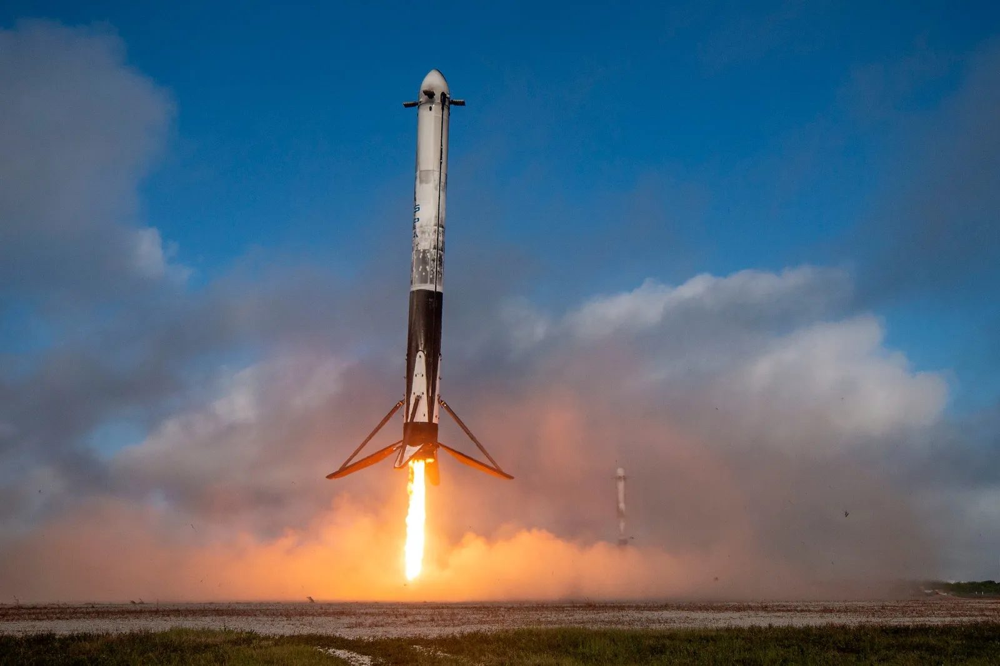
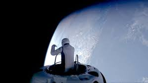
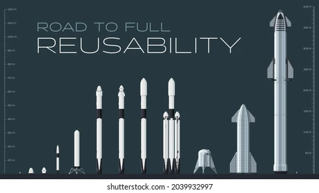
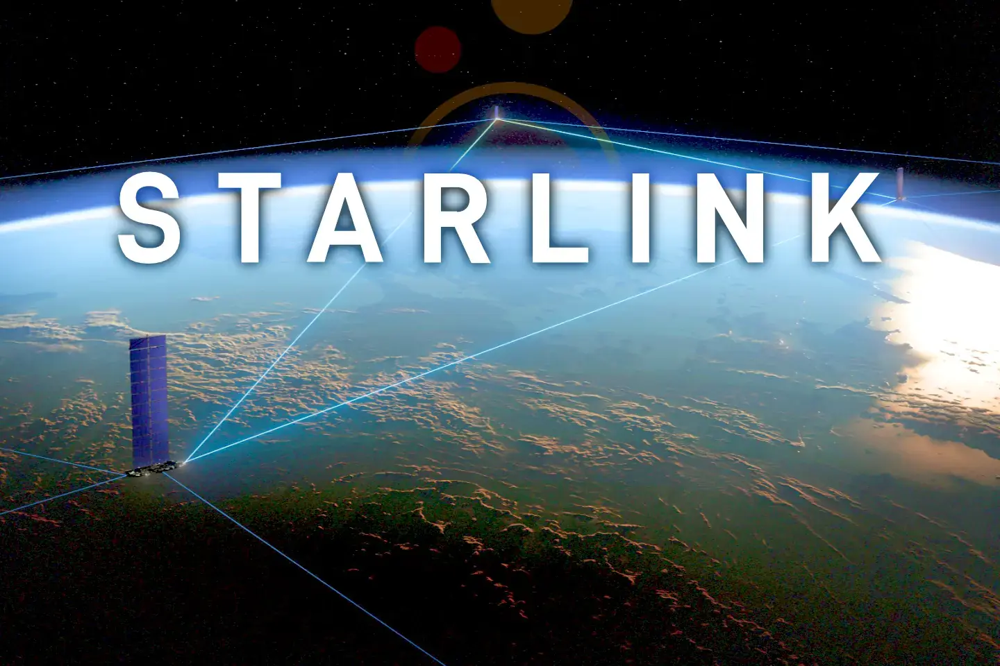

SpaceX, fundada el 2002 per Elon Musk, va néixer amb l'objectiu de reduir els costos de llançament espacial i fer possible la colonització de Mart. Musk va concebre l'empresa després de la seva experiència amb PayPal, utilitzant la seva fortuna per crear una companyia que abordés els reptes tecnològics de l’exploració espacial.
En els seus inicis, SpaceX va desenvolupar el Falcon 1, el seu primer coet, que va assolir amb èxit l'òrbita el 2008. Això va marcar el principi d'una nova era per a l'empresa i per al sector espacial. Des de llavors, ha llançat projectes emblemàtics com el Falcon 9, el Falcon Heavy i la càpsula Crew Dragon, consolidant-se com a líder en el sector aeroespacial.
SpaceX
En aquesta pàgina es farà un repàs de la història de la companyia SpaceX, acompanyat d’un anàlisi de l’impacte que ha tingut en el sector aeroespacial i la revolució que ha generat. Finalment, es parlarà dels coets que ha desenvolupat i que actualment està desenvolupant.
Com va sorgir?
 

L'impacte i la revolució de l'espai
SpaceX ha tingut un impacte revolucionari en el sector aeroespacial gràcies a innovacions tecnològiques clau:
- Coets reutilitzables: L’empresa va introduir coets amb capacitat de ser reutilitzats, reduint dràsticament els costos de llançament. El Falcon 9 i el Falcon Heavy són exemples d’aquesta tecnologia, amb aterratges de precisió mitjançant retropropulsió.
- Nous motors de coets: SpaceX ha desenvolupat els motors Raptor, que utilitzen metà i oxigen líquid, amb una eficiència superior per a missions interplanetàries.
- Fites històriques: Ha estat la primera empresa privada en:
- Portar astronautes a l'Estació Espacial Internacional (ISS).
- Realitzar una activitat extravehicular (EVA) en una missió privada, durant la missió Polaris Dawn.


Coets i nous projectes
SpaceX ha desenvolupat diversos coets i sistemes avançats per al transport espacial:
- Falcon 1: Primer coet orbital de SpaceX.
- Falcon 9: Coet reutilitzable de dues etapes, amb centenars de llançaments d'èxit.
- Falcon Heavy: El coet operatiu més potent del món, capaç de transportar grans càrregues.
- Starship-Superheavy: Sistema completament reutilitzable en desenvolupament, dissenyat per a missions a la Lluna, Mart i més enllà.
- Dragon i Crew Dragon: Càpsules per al transport de càrrega i astronautes a la ISS.
A més, SpaceX lidera el projecte Starlink, una xarxa global de satèl·lits que ofereix connexió a Internet d'alta velocitat a tot el món, incloent-hi zones remotes.

